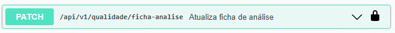

Atualização da Ficha de Análise
Este endpoint realiza a atualização dos campos editáveis presente na ficha de análise, para realizar a alteração o usuário deve preencher e enviar o JSON abaixo:
{kind=link}
Atualiza ficha de análise
{
"docNum": 0,
"aprovada": "",
"observacoes": "",
"item": {
"quantidade": 0
},
"conteudo": [
{
"lineId": 0,
"valorEncontrado": "",
"metodoAnalise": "",
"recurso": "",
"aprovada": "",
"naoConformidades": "",
"analista": "",
"dataAnalise": "2024-11-14",
"especificacaoAtiva": true,
"observacaoEspecificacao": ""
}
]
}
Deve-se levar em consideração o status da ficha de análise, pois quando a mesma possui status ‘Planejado’, apenas alguns campos são atualizáveis.
Segue abaixo exemplo de JSON enviado para atualizar uma ficha de análise com status ‘Planejado’:
Atualiza ficha de análise com status Planejado
{
"docNum": 635,
"observacao": "Atualizar Ficha de Análise",
"conteudo": [
{
"lineId": 1,
"metodoAnalise": "0000001",
"recurso": "MQ",
"especificacaoAtiva": true,
"observacaoEspecificacao": "Atualização linha de Ficha de Análise"
}
]
}
Segue abaixo exemplo de JSON enviado para atualizar uma ficha de análise com status ‘Liberado’:
Atualiza ficha de análise com Status Liberado
{
"docNum": 615,
"aprovada": "Y",
"observacoes": "Atualizar Ficha",
"item": {
"quantidade": 2
},
"conteudo": [
{
"lineId": 1,
"valorEncontrado": "1",
"aprovada": "Y",
"dataAnalise": "2024-11-14",
"observacaoEspecificacao": ""
}
]
}